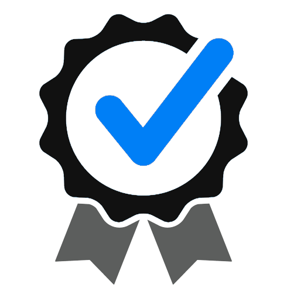

In the drive to engage our region and boost up the innovativeness in youths, Kakebe Technologies and partners is organizing for Lango Innovation Challenge exclusive to institutions in Lango region under
a theme Digital Transformation in Lango Region that shall constitute Secondary schools and institutions around the Lango region for the Technology Challenge that
shall be hosted in Lira City as the Center of Lango.
Different districts register their schools that would love to participate in the challenge and they shall have inter-district competitions that shall be done using the online submission
prior to the regional challenge day to choose two schools with best innovative ideas from the district for the regional competition.
Best performers from the regional competition shall be awarded and taken through the Kakebe Acceleration Program to fine tune their innovations and push them
to next levels. We have a great vision of growing Lango region in terms of science & technology related innovations fields to uplift the talents in youths.
Who can participate
Secondary Schools
Secondary School students are highly recommended to participate especially lower secondary in Lango.
Institutions
Students from Universities, institutions and tertiary colleges are eligible to apply with their innovative ideas
IT Enthusiasts
Interested youths in innovations who are not currently at school are also eligible to apply for youths below 30 years of age.
Benefits for Participants

Work and network with master students from other top learning schools that promote even academic development
Promote collaborative learning and enables students to communicate, share, and work collaboratively anywhere, any time.
Building a passionate community of experts and influencers who are innovative for the Transformation of our region
Offer more opportunities to develop critical (higher-order) thinking skills based on a constructive learning approach.
Stimulate the appetite for innovation, among other values associated to students creating a difference in them
Support student-centered and self-directed learning. Students are now more frequently engaged in the meaningful use of computers.
Producing a creative learning environment. students’ develop new understanding in their areas of learning.
ICT in education improves engagement and knowledge retention: When integrated into lessons, students become more engaged in class.